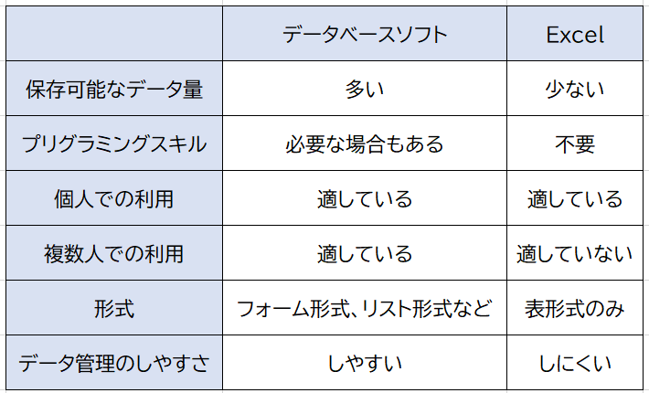

データベースとは
データベースとはデータを管理するための入れ物のことで顧客情報や経営情報など様々なデータを効率的に保管したり呼び出したりすることができます。
そのため、企業をはじめ多くの組織・個人に利用されています。
引用元
Excelとの違い

引用元
データベースは「誰が・何を・どこで・何をした」という情報をつなげて保存しているため、情報の変更がやりやすい。
Excelは一つ一つ別で情報を管理している(メモ帳のような物)ため情報の変更をまとめてできないため、利用者が増えると破綻する。
X(旧twitter)のデータベースについて考えてみた。
Xとは
X（旧Twitter）は、世界中のユーザーが短文、画像、動画を投稿・共有できる無料のSNS最新ニュースの収集やリアルタイムのトレンド把握、他のユーザーやAIアシスタント「Grok」との交流、音声配信など、幅広い用途で利用されている。
最近では、認証マークなどが追加されインプレッション数などに応じて収益が発生するようになった。
主な機能
(1)短文テキスト、画像、動画を投稿・共有といったメイン機能(2)DM、スペース、ブックマーク、コミュニティといったサブ機能
主なテーブルについて
ユーザーテーブル中身： ユーザーID、表示名、@ユーザー名、自己紹介、アイコンURL、作成日時など。
フォロー関係テーブル
中身：フォロー元のユーザーID、フォロー先のユーザーID
ツイートテーブル
中身： ツイートID、投稿者のID、本文、投稿日時、親ツイートID
メディアテーブル
中身： メディアID、ツイートID、画像/動画のURL、画像サイズ
いいねテーブル
中身： ユーザーID、ツイートID、いいねした日時。
他にも多くのテーブルが存在するが、いったん上記のテーブルについてまとめる。
主なテーブルの関係について
フォロー関係
ポストの紐づけ

アカウントとデータのつながりを分かりやすく